An Introduction to Machine Learning for Biologists
Journal Club
September 25, 2012
- A Brief Introduction To Machine Learning, Gunnar Rätsch pdf
- ML Bioinformatics Summer Course, Gunnar Rätsch web
- Element of Statistical Learning, T. Hastie, R. Tibshirani, J. Friedman pdf
Images and text are copied from these sources.
Machine Learning
"Aims to mimic intelligent abilities of humans by machines"
Machine Learning
What is it used for?
Examples
It's what Google does
Netflix Prize

Bioinformatics
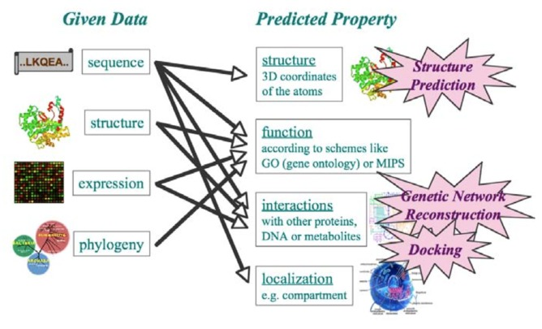
Bioinformatics
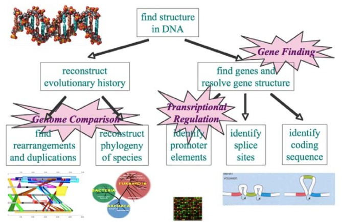
Microarray Analysis
- which samples are most similar
- which genes are most similar
- which expression variations correlate with specific diseases
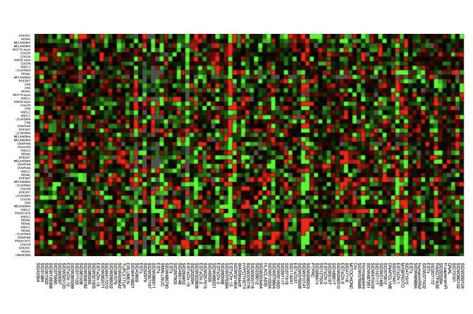
Polyphen2
Predicts possible impact of an amino acid substitution
- SVM, Naive Bayes (Sunyaev)
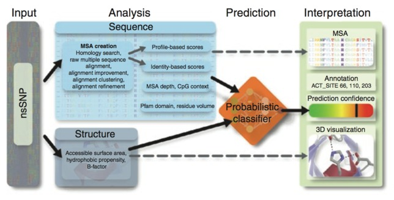
ArrayCGH
Predict copy number
- Fused Lasso (ESL)
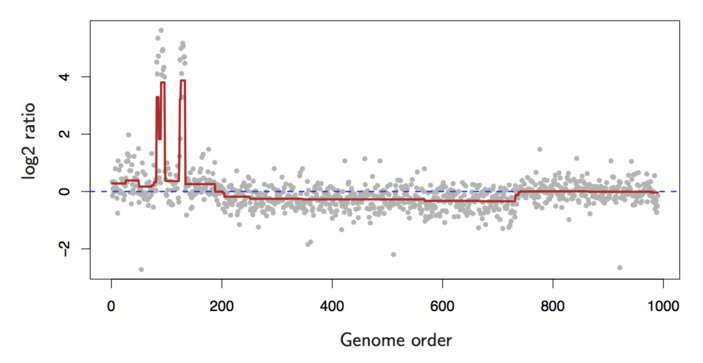
Splicing Code
Predict splicing
- SVM, Graphical Model, ...
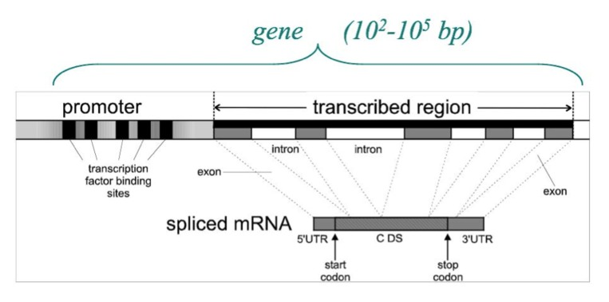
Protein Structure
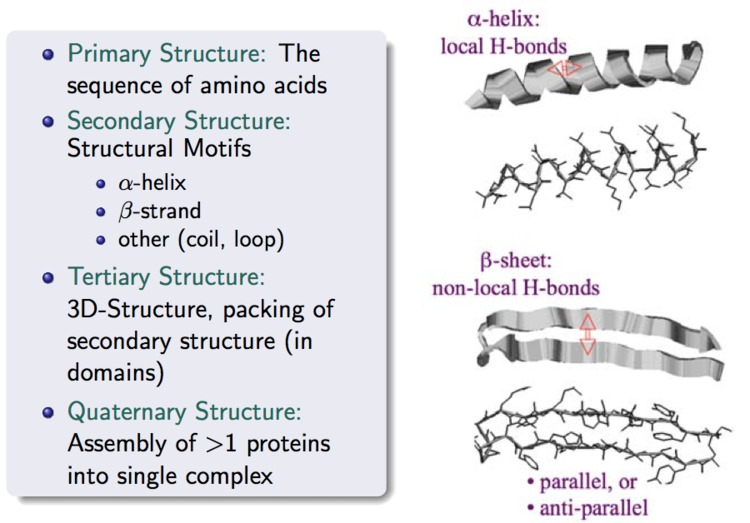
Machine Learning
A Closer Look ...
Machine Learning is ...
Concerned with how to make a machines learn from data
- Observe examples that represent incomplete information about some "statistical phenomenon"
Learning Algorithms
Generate rules for making predictions
- INPUT: Training Data
- OUTPUT: Classifier, Probabilistic Model, Clusters ...
Learning Algorithms
Two Types
- Unsupervised learning
- Supervised learning
Unsupervised Learning
Uncover hidden regularities or detect anomolies
- Input training data $D$
- Learn model $P(D)$
Supervised Learning
Learn function that predicts label $Y$ associated with each example $X$
- Input training data $D$
- Learn prediction function $Y = F_D(X)$
Supervised Learning
Binary $Y$ == "Classification"
Real-valued $Y$ == "Regression"
Learning Algorithms
Many varieties
Very accurate and efficient
Easy to use
Surpass human's ability to process large quantities of complex data
An Aside About Training Data ...
Data Collection and Representation
Input $X$
"Pattern", "Features", "Predictors"
- Invariant to undetermined transformations
- Sensitive to differences between examples
Output $Y$
"Response", "Target", "Class / Categorical label"
- Represents the Truth
- Typically difficult and/or expensive to collect
Training Data
Inputs
- $n$ examples
- $m$ features
- $n x m$ matrix
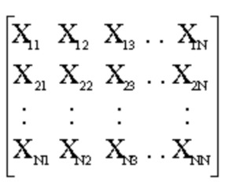
Outputs
- $Y_1, \ldots, Y_n$
Classification Algorithms
k - Nearest Neighbors
Prediction is majority vote between the k closest training points
- Distance measured in $m$ dimensional features space
k=15 - Nearest Neighbors
- 2-dimensional features
- Color indicates class
- Line depicts decision boundary
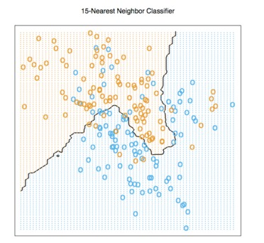
k=1 - Nearest Neighbors
- Different solutions are possible with different $k$
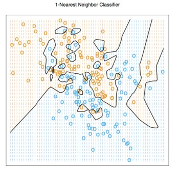
Decision Trees
Partition data into a tree
- Prediction is a majority vote of training labels within a leaf node

Support Vector Machines
- Separating hyperplane
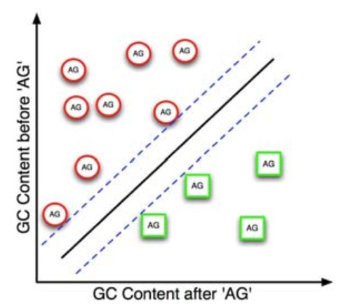
Support Vector Machines
- SVM's can find non-linear decision boundaries efficiently
- A linear decision boundary in the high-dimensional transformed space corresponds to a non-linear boundary in the original space
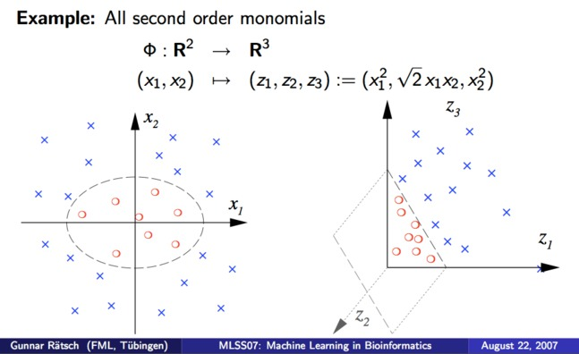
Support Vector Machines
- Comparison of linear and non-linear classification performance
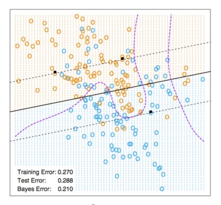 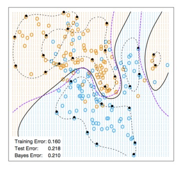
More Classification Algorithms
- Linear Discriminant Analysis
- Boosting
- Neural Networks
Regression Algorithms
Learning to predict real-valued outputs
- Linear Regression
- Logistic Regression
- Regression Trees
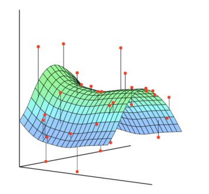
Feature Selection & Dimensionality Reduction
Techniques used before and/or during learning
Characterize inputs in low-dimensional space
- False Discovery Rate
- PCA
- Multi Dimensional Scaling
- Latent Factor Analysis
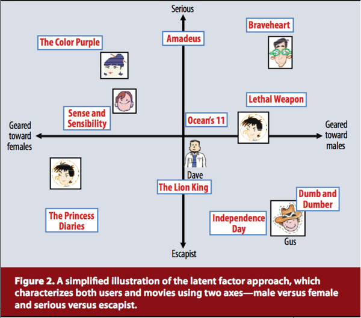
Not Covered ...
Learning theory
Bias & variance (overfitting)
Cross validation
Fin.
- A Brief Introduction To Machine Learning, Gunnar Rätsch pdf
- ML Bioinformatics Summer Course, Gunnar Rätsch web
- Element of Statistical Learning, T. Hastie, R. Tibshirani, J. Friedman pdf
Images and text are copied from these sources.
blog comments powered by Disqus